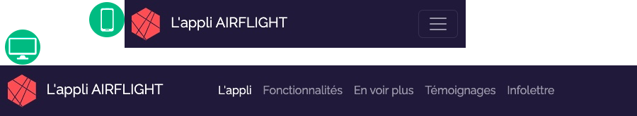
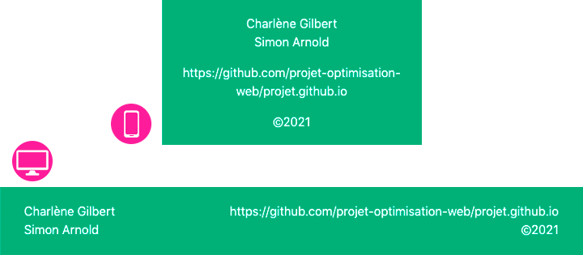
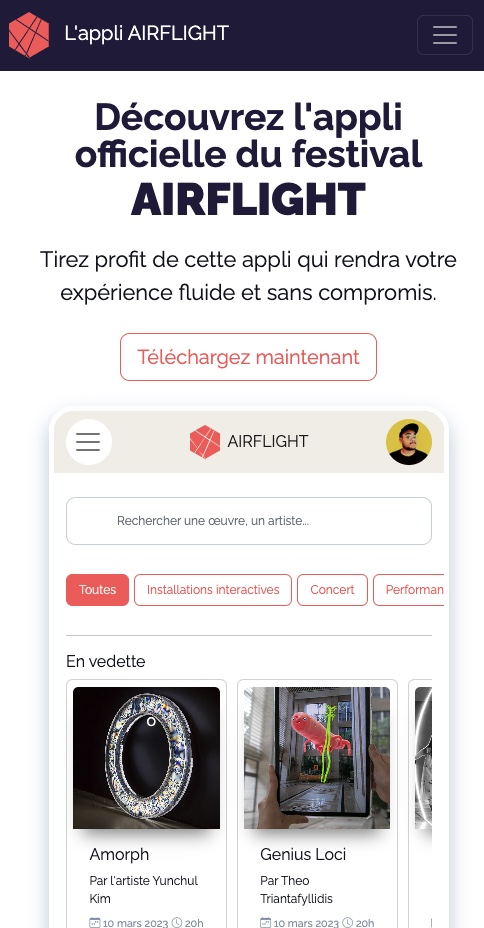
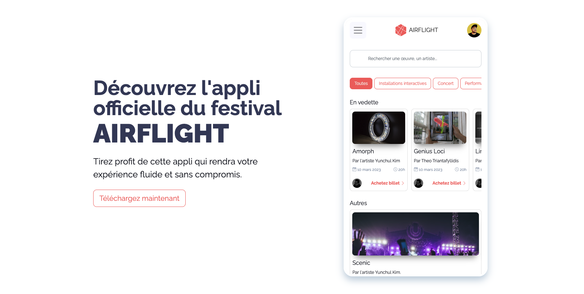

Requis individuel pour la landing page
Base de la page et navBar
Aperçu du résultat pour la navBar👇

Dans ta page HTML, ajoute dans le head, une balise meta robots dans laquelle tu vas spécifier que les moteurs de recherche existants (Bing ,Google etc) ne doivent pas indexer, ni suivre ta page Web (afin d'éviter que ton faux site d'app de festival se retouve sur Google et confonde les gens), plus d'info sur cette balise ici ou alors tu peux Googler sur le sujet pour mieux comprendre à quoi ça sert.
Toujours dans ta page HTML, tu dois créer un header, main et footer.
Dans header, tu dois ajouter une navBar Bootstrap. Celle-ci doit avoir un thème de couleur et une couleur de fond.
La navbar doit prendre une largeur complète de l'écran de sorte que son fond de couleur doit créer une ligne qui remplit la largeur de la fenêtre du navigateur. Cependant le contenu à l'intérieur de la navbar doit-être dans un conteneur Bootstrap de base, changeant de largeur maximale en fonction du breakpoint.
À partir du breakpoint lg, la navbar doit afficher une barre de navigation complète.
À ta navbar, ajoute ton logo. Ce logo doit-être cliquable pour ramener au haut de la page.
À ta navbar, ajoute une liste d'ancres (liens):
L'appli | Fonctionnalités | En voir plus | Témoignages | Infolettre
La première ancre, mène vers la section héros en haut de la page, la deuxième vers la future section "fonctionnalites", la troisième vers une section "voir plus" etc. Vous pouvez alors déjà déterminer le id des sections et préparer vos href vers les futures sections de la page.
La navbar doit être toujours figée en haut de la page, peu importe le défilement de la page.
Le lien .active de la navBar devra se mettre à jour automatiquement en fonction de la section vis-à-vis laquelle on défile (scroll). Pour ce faire, vous devrez utiliser la composante "Scrollspy" de Bootstrap. On ne l'a pas vu ensemble, mais je veux que vous appreniez à vous documenter vous-même, ainsi, je vous invite à aller voir comment utiliser cette composante ici.
Notes de cours 📚
NavBar
La barre de navigation Bootstrap
Pied de page
Aperçu du résultat pour le pied de page👇

Le pied de page doit se démarquer du contenu principal du site en ayant une couleur de fond le différenciant, une marge intérieure d'au moins 1rem afin que son contenu ne touche pas ses extrémités et finalement une marge extérieure verticale de 1rem vers le haut ⬆️ afin que celui-ci ne touche pas au contenu le précédent dans la page. Tu dois utiliser la classes utilitaires Bootstrap pour créer des espacements.
Un conteneur Bootstrap doit être utilisé afin de gérer le positionnement des éléments à l'intérieur de celui-ci.
Le texte doit être centré par défaut dans le pied de page.
Faites en sorte que par défaut les informations suivantes apparaissent une en dessous de l'autre dans l'ordre suivant:
-Noms des artisans du site.
-Un lien vers répertoire GitHub du projet.
-La mention "©2024".
Faites en sorte que l'url de GitHub soit un lien vers votre répertoire git.
Bien que l'url du répertoire git soit un lien, ce texte ne doit pas être souligné, il ne pas être bleu mais il doit changer d'apparence au survol. Petit "challenge", ton sélecteur css pointant vers ce lien ne doit pas être une classe. Tu ne peux qu'utiliser les sélecteurs css avec le nom de la balise MAIS, le style ne doit s'appliquer que sur cette balise là et non à tous les liens de la page.
À partir du breakpoint lg, le nom des artisans doit être aligné à gauche et apparaitre à gauche du pied de page, tandis que le lien vers le répertoire GitHub et la mention "©2024" doivent être alignés à droite et apparaitre à droite du pied de page.
Notes de cours 📚
Grille
Système de grille Bootstrap pour une mise en page facile et réactive
Section Hero
Aperçu du résultat pour la section Héros


Évidemment, votre héros ne sera pas exactement pareil à l'apercu, car vous avez fait votre propre design mais il doit tout de même suivre ces quelques instructions. Si votre design ne correspond pas tout à fait aux instructions, les instructions pré-dominent.
Votre héros doit être divisé en 2 colonnes. Par défaut, ces 2 colonnes se placent l'une en dessous de l'autre.
Le contenu de ces 2 colonnes est par défaut centré.
À partir du breakpoint de votre choix entre md, lg ou xl, ces 2 colonnes se déploient l'une à côté de l'autre et leur contenu n'est plus centré, il sera aligné à gauche.
Ces 2 colonnes ensemble ne s'affichent pas nécessairement sur tous les 12 séparateurs de la grille Bootstrap. Vous pouvez penser à utiliser des offset.
La première colonne contient un texte qui présente l'appli du festival. Vous pouvez réutiliser le même texte comme ci-haut ou rédiger votre propre texte. Il faudrait par contre que vous utilisiez le nom de votre festival et non pas "airflight". Votre texte doit contenir le titre principal de la page ainsi qu'un sous-texte. Utilisez les balises appropriées. Il y aura aussi un bouton d'appel à l'action, utilisez la composante Bootstrap. Stylisez le tout au besoin.
La 2e colonne contiendra un div qui représente le "cadre du téléphone mobile". Ce div aura une largeur de 100% dans sa propre colonne et un ratio de 5/9 pour que la hauteur s'automatise. Vous pouvez, au besoin, ajouter une largeur maximale. Ajoutez vos styles au besoin pour s'approcher le plus de votre design.
Ajoutez dans le div qui fait office de cadre de téléphone, un iframe dont la source sera la page HTML qui correspond à l'appli de votre collègue.
Notes de cours 📚
Grille
Système de grille Bootstrap pour une mise en page facile et réactive
Remise de P1.2
Une fois tout complété, créez vous une branche git nommée P1-2 et publiez cette branche sur github.
Après la remise, vous ne touchez plus à cette branche. Vous devrez continuer sur la branche main et la branche P1-2 demeurera telle qu'elle afin que je puisse y faire ma correction. Les propchaines remises seront toujours sur des branches distinctes.